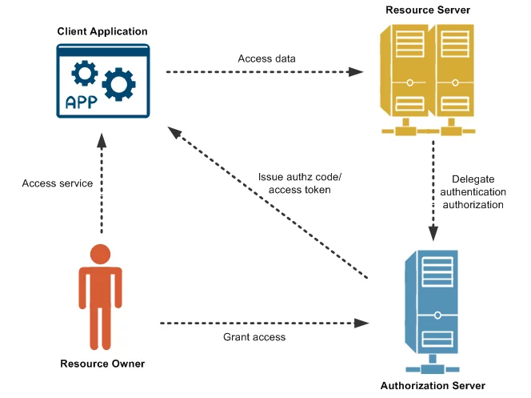

Introdução
Navegar a internet com segurança é extremamente importante, já que novos métodos de invasão de sistemas por arquivos acidentalmente baixados e dados coletados sem o consentimento do usuário para fins maliciosos podem aparecer em qualquer site. Por isso, vários programadores criaram programas e protocolos que ajudam a manter a privacidade do usuário comum, assim evitando que seus dados pessoais e financeiros sejam coletados por alguém que não deveria ter acesso a eles.
Nos tempos atuais, muitas pessoas não sabem como se prevenir e desconhecem os protocolos que devem seguir, assim fazendo com que golpes e ameaças sejam muito comuns, especialmente com jovens ou idosos. A segurança na web deveria ser algo mais reconhecido na área de tecnologia, já que é uma das coisas mais importantes que todo usuário da internet deve seguir.
Benefícios
Proteção de dados sensíveis do usuário
Bloqueia o roubo de informações pessoais, credenciais bancárias e dados corporativos, evitando fraudes e roubos de identidade.
Continuidade nos negócios
Previne que seus sites e aplicativos parem por ataques de DDoS ou ransomware, assim mantendo seus serviços online e estáveis.
Prevenção de prejuízos financeiros
Reduz os custos associados a paralisações, recuperação de dados, resgates de ataques e possíveis multas da LGPD.
Detecção Proativa de Ameaças
Monitora atividades suspeitas, permitindo identificar e corrigir vulnerabilidades antes que sejam exploradas.
Principais Fatores da Segurança Digital
Proteção de dados sensíveis do usuário
Bloqueia o roubo de informações pessoais, credenciais bancárias e dados corporativos, evitando fraudes e roubos de identidade.
Continuidade nos negócios
Previne que seus sites e aplicativos parem por ataques de DDoS ou ransomware, assim mantendo seus serviços online e estáveis.
Prevenção de prejuízos financeiros
Reduz os custos associados a paralisações, recuperação de dados, resgates de ataques e possíveis multas da LGPD.
Detecção Proativa de Ameaças
Monitora atividades suspeitas, permitindo identificar e corrigir vulnerabilidades antes que sejam exploradas.
Autenticação OAuth

O OAuth é outro nome para “Autorização Aberta”, que é um padrão comumente usado para permitir que um site ou aplicativo utilize os recursos de outro site ou aplicativo em nome do usuário, sem nunca compartilhar as credenciais do mesmo. A versão atual é o OAuth 2.0, tendo substituído o OAuth 1.0 em 2012.
No entanto, o OAuth é um protocolo de autorização e não de autenticação, portanto ele foi projetado principalmente como um meio de conceder acesso a um conjunto de recursos como APIs remotas ou dados do usuário. Ele utiliza um token de acesso para representar a autorização para acessar os recursos em nome do usuário final, porém, em alguns casos, tokens de JSON Web também podem ser usados.
Segurança contra XSS (Cross-Site Scripting)

XSS é um tipo de vulnerabilidade da web que permite com que alguém modifique as interações que o usuário realiza com o aplicativo. Ele funciona manipulando um site vulnerável, enviando um JavaScript malicioso para os usuários. Assim que o script for executado, o hacker consegue controlar as interações do usuário com o aplicativo.
A segurança contra XSS (Cross-Site Scripting) baseia-se em nunca confiar na entrada do usuário, utilizando sanitização rigorosa e validação de dados. As defesas cruciais incluem o escape de dados na saída, uso de frameworks seguros, implementação de Content Security Policy (CSP) e manutenção de software atualizado.
Conclusão
Portanto, a segurança na web é um assunto muito interessante e abrangente que não ganha muito destaque no dia-a-dia, o que é preocupante considerando a popularidade do uso das IAs nos códigos. Todo desenvolvedor deve se familiarizar com os básicos da segurança digital para evitar que seus aplicativos e sites tenham vulnerabilidades graves no futuro.
A segurança contra vulnerabilidades é algo extremamente importante também, visto que hackers maliciosos podem utilizar informações sensíveis dentro de seus servidores para seu próprio benefício.